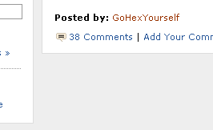

ブログの背景色を薄い白にカスタマイズ
今日はちょっと調べものがあっていろいろとネットサーフィンをしていたのですが、ページの背景が白というのはけっこう目が疲れてしまうようです。
このブログも背景が白のシャープ・エフエフ・・・なので、たぶん途中で目がいたくなると思うんで、薄い白にカスタマイズしてみようと思います。ニュースサイトなどでは、記事本文を白に、背景の色彩を灰色に設定しているパターンが多いようです。
読まれてなんぼのニュースサイトを色彩採取ツールなどで調べてみると、ＡＢＣやＣＮＮではところどころ背景を薄い白（灰色）にしている配慮がされているようで、このブログでも薄い白にしようと思います。
ABCニュースの場合はこんな背景画像の色彩になっているようで、カラーコードは #eeeeee となっているようです。

原色大辞典でも適当な色をみてみたのですが、どれもピンとくるのがなかったんで適当につけてみました。感じとしては池のなかへ深く深く沈んでいく感じにしようと思ったのですが、もう少し薄めの色がほしかったところです。
カスタマイズする際は css スタイルシートの background-color の箇所に調べた色の数字を入力します。上の画像のような灰色だとカラーコードは #eeeeee になります。
body {
background-color:#eeeeee;
}
シーサーブログの場合、全体的に薄い白色にするなら body のみにカラー指定を、記事本文のテキスト部分は白くする場合、text に #ffffff を指定するといい感じです。
body {
background-color:#eeeeee;
}
.text{
background-color:#ffffff;
}
ちなみに、上の画像だと、白と灰色の境界線に、#dddddd の色彩が指定されていますので、スタイルシートはこんな感じになるはずです。
body {
background-color:#eeeeee;
}
.text{
background-color:#ffffff;
border:1px solid #dddddd;
}
右サイドバーだけ薄い白色にする場合は、#links にカラー指定するといいと思います。
#links{
background-color:#eeeeee;
}
上のはABCニュースですが、CNN だと #dadada、BBC だと #d8d8d8 で指定されているようです。
スタイルシートのどの要素が、ブログのどの部分に対応しているかはこちらを参考に、、
ブラウザが画面を読み込む瞬間は body の background-color が全体的に一瞬表示され、次に内側のテキスト部分のスタイルシートが読み込まれるので、違和感のないように統一された色彩を指定するといいと思います。
- シーサーブログのヘッダー画像のカスタマイズ
シーサーブログ(seesaa blog)で壁紙の背景画像が簡単に変えられるようなのでちょっとカスタマイズしてみました。 テンプレート一覧のところにいつもあったフォトライブラリーというリンクですが、こ... - スタイルシートカスタマイズでブラウザ崩れ
シーサーブログではスタイルシートを個別に設定できるので、個別記事やカテゴリ欄、過去ログやトップページなどそれぞれ個別にカスタマイズできるようです。 シーサーブログ（Seesaa Blog）のカスタマ... - シーサーブログでフッターカスタマイズ
無料ブログのシーサーブログでいろいろやってるんですが、フッターの立場がいまいちわからないのでちょっとレイアウトを少しカスタマイズしてみました。 ブログのフッターといえば、やはり、コピーライトとかなん... - シーサーブログの壁紙カスタマイズ
シーサーブログのカスタマイズについて、けっこう、壁紙で印象がだいぶ違ってきたりするものだと思います。以前にも壁紙カスタマイズについての記事は書いたんですけど、どこかに埋もれてしまってわからなくなってし...